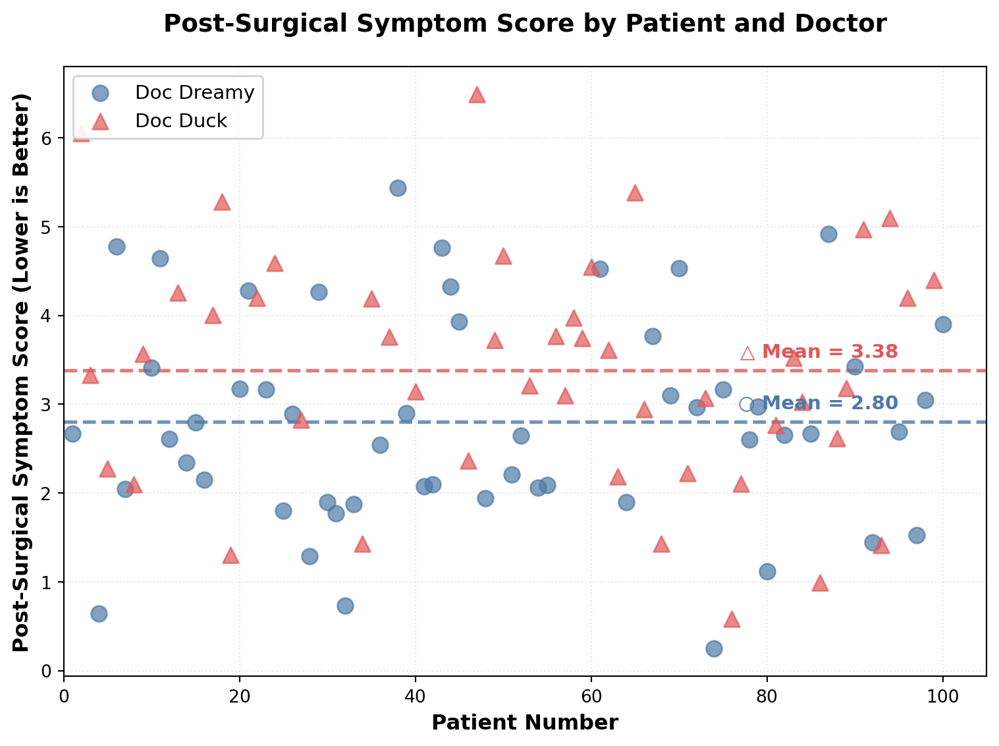
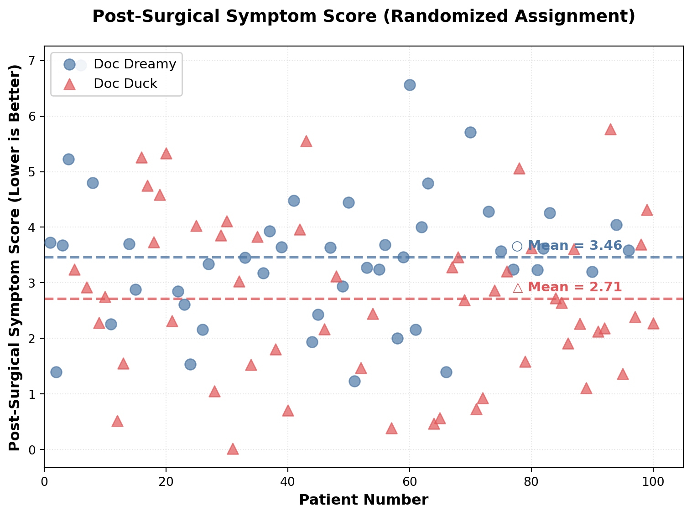
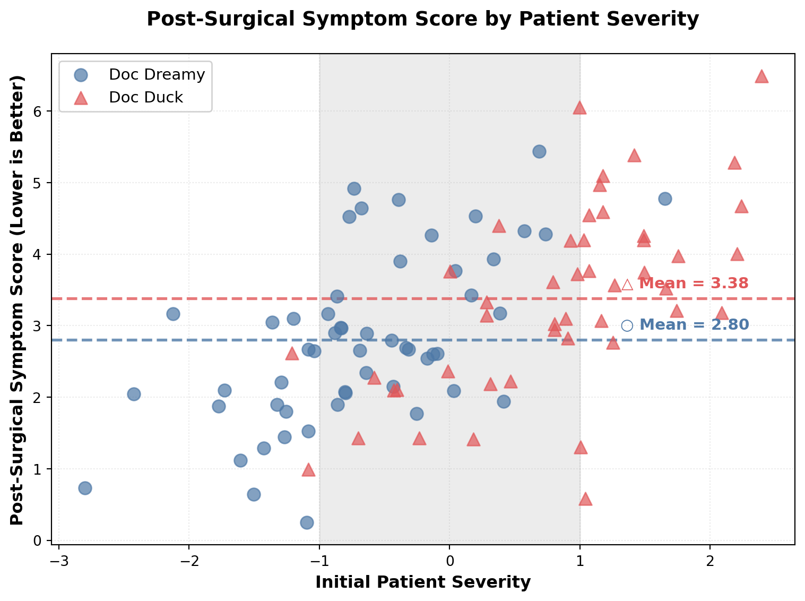

Using Randomization & Stratification to Overcome A Common Cause Confounder
A Case Study in Causal Inference with Observational and Experimental Data
Executive Summary
This report demonstrates how common-cause confounders can create misleading associations in observational data and presents two methodological solutions: randomization and stratification. Using simulated surgical outcome data from two physicians, we show how patient severity acts as a confounder, making the inferior surgeon appear superior in observational analysis. Through randomized controlled trials and stratification analysis, we reveal the true causal relationship and illustrate fundamental principles of causal inference that apply broadly across healthcare, social science, and business analytics.


Conclusions and Implications
The analysis presented in this report demonstrates three critical lessons for data-driven decision making:
1. Observational associations can be deeply misleading. The raw observational data (Figure 1) suggested Doc Dreamy was the superior surgeon with statistically significantly better outcomes (mean score 2.80 vs 3.38, p=0.023). This conclusion would have been wrong, leading to suboptimal patient care and perpetuating bias against surgeons who don’t fit traditional stereotypes.
2. Randomization reveals causal truth. When we randomized patient assignment (Figure 2), breaking the confounding pathway, the truth emerged: Doc Duck is actually the better surgeon (mean score 2.71 vs 3.46, p=0.007). This reversal of conclusions underscores why randomized controlled trials remain the gold standard for causal inference.
3. Stratification provides an alternative when randomization isn’t feasible. Figure 3 demonstrates that careful stratification by the confounder (patient severity) can reveal the true relationship even in observational data. By examining patients of similar severity, we see Doc Duck consistently achieving better outcomes within comparable groups, despite treating more severe cases overall.
The broader implication extends far beyond this surgical example. Whether evaluating medical treatments, assessing business interventions, or analyzing social programs, practitioners must remain vigilant about confounding variables. The mental discipline of drawing directed acyclic graphs (DAGs), identifying potential confounders, and applying appropriate analytical techniques—randomization when possible, stratification when necessary—represents the difference between insight and illusion in data analysis.
As Taleb wisely observes, those who succeed despite not fitting the expected profile often possess genuine skill that has been tested by reality. Our analysis confirms this intuition through rigorous statistical methods, demonstrating that data literacy combined with causal thinking can overcome cognitive biases and reveal truth hidden beneath superficial associations.